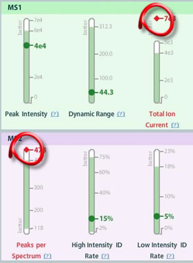
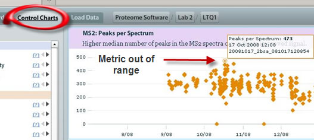
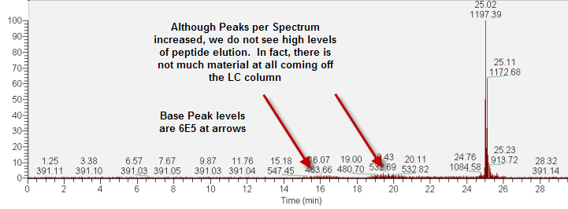
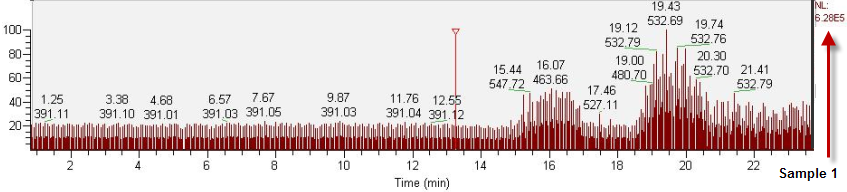

Triggering poses an interesting paradigm with mass spectrometry and, in particular, tandem mass spectrometry (MS/MS). We tune the instrument (and create the method) to trigger on the peaks we want (or the most abundant peaks), but sometimes the triggering occurs on other than desired peaks - on noise, for example.
In this case, we see two metrics out of range, MS1 Total Ion Current and MS2 Peaks Per Spectrum :

And to confirm the metric's historical data are out of range, we go to the Control Charts to verify:

So why do we think that these two metrics indicate triggering on noise? Well, we look to the mass spectra, (as is advised when metrics are out of range and it is not obvious what the problem is):

Now, taking a closer look a the noise level, we see that for over 20 minutes, there are not many eluting peptides, yet at the MS2 level, the Peaks per Spectrum is flagged high, as well as the Total Ion Current , both symptoms of higher than normal noise:

If you have questions, comments and/or insights about MassQC , you can share them on the MassQC Users Forum .